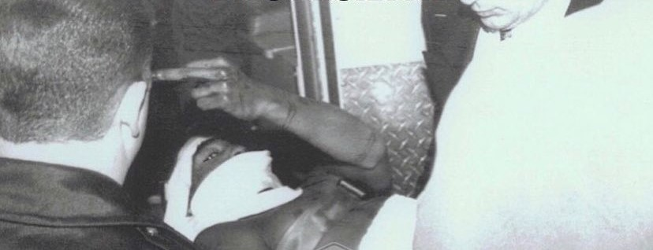

2Pac, nome d'arte di Tupac Amaru Shakur , era un rapper statunitense della west coast, considerato universalmente The G.O.A.T. (greatest of all times), ha pubblicato 12 album in studio di cui 7 postumi e, nonostante sia morto nel 1996 ha ancora milioni di ascoltatori
fu vittima dell'ultimo attentao all'età di 25 anni, l'8 settembre 1996 quando, mentre tornava in albergo doppo aver assistito ad un incontro tra Mike Tyson e Bruce Sheldon, un uomo gli sparò cinque proiettili da una moto in corsa, colpendolo al fegato e al polmone destro. Morì il 16 settembre all'University Medical Center of Southern Nevada a Las Vegas. Il suo assassino, dopo più di 20 anni dalla sua morte, è ancora sconosciuto
per più informazioni clicca QUI
| Disco | Anno |
| 2Pacalypse Now | 1991 |
| Strictly 4 My N.I.G.G.A.Z. | 1993 |
| Me Against the World | 1995 |
| All Eyez on Me | 1996 |
| The Don Killuminati: The 7 Day Theory | 1996 |
| R U Still Down? | 1997 |
| Until the End of Time | 2001 |
| Better Dayz | 2002 |
| Loyal to the Game | 2004 |
| Pac's Life | 2006 |